All mechanicsAlle systemen
How everything works: taming, hearts, the guh house, clothes, the Guhdex, the super compass, emotes and more.
Hoe alles werkt: temmen, hartjes, het guhhuisje, kleding, de Guhdex, het superkompas, emotes en meer.
27 / 27
| NameNaam | KindSoort | AboutOver | |
|---|---|---|---|
 | Taming, riding and picking upTemmen, rijden en oppakken | MechanicSysteem | You tame a wild guh with kaasknabbels. A tamed guh can be ridden, picked up, dressed up and launched.Een wilde guh tem je met kaasknabbels. Een tamme guh kun je berijden, oppakken, aankleden en lanceren. |
 | PersonalitiesKarakters | MechanicSysteem | Every guh has a personality: playful, lazy, vadsig, shy, brave, chatty, cuddly or curious.Elke guh heeft een karakter: speels, lui, vadsig, verlegen, dapper, kletskous, knuffelig of nieuwsgierig. |
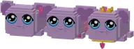 | Hearts and the soul guhHartjes en de zielsguh | MechanicSysteem | The heart meter: the more you do with your guh, the more hearts.De hartjesmeter: hoe meer je met je guh doet, hoe meer hartjes. |
 | FavouritesFavorietjes | MechanicSysteem | Every guh has eight secret favourites. Guess them (warm or cold?) and your guh gets happy.Elke guh heeft acht geheime favorietjes. Raad ze (warm of koud?) en je guh wordt blij. |
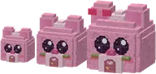 | The guh houseHet Guhhuisje | MechanicSysteem | A little house shaped like a guh head, in three sizes: your guhs live there, sleep there at night and do...Een huisje in de vorm van een guhhoofd, in drie maten: daar wonen je guhs, slapen ze 's nachts en doen ze... |
 | ChoresKlusjes | MechanicSysteem | Guhs that live in a guh house do ten kinds of chores around it during the day.Guhs die in een guhhuisje wonen doen overdag tien soorten klusjes rond hun huisje. |
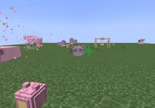 | ToysSpeelgoed | MechanicSysteem | A guh playground: knabbel ball, little slide, fluffy tunnel, seesaw and swing.Een guhspeeltuin: knabbelbal, glijbaantje, pluizige tunnel, wip en schommel. |
 | TogetherSamen | MechanicSysteem | Your guhs cheer for you in minigames, ride along on the back and make friends with each other.Je guhs juichen je toe bij minigames, rijden achterop mee en sluiten vriendschap met elkaar. |
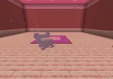 | The guh roomDe Guhkamer | MechanicSysteem | A guest room in your guh stomach, where your guhs come to stay.Een logeerkamer in je guhmaag, waar je guhs op bezoek komen. |
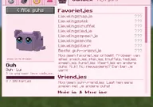 | The guh menuHet guhmenu | MechanicSysteem | Hold right-click on your guh: the menu with petting, hugging, emotes, clothes, the diary and the guh room.Houd rechtsklik ingedrukt op je guh: het menu met aaien, knuffelen, emotes, kleding, het dagboekje en de... |
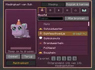 | Clothes and the wardrobeKleding en de kledingkast | MechanicSysteem | Dress up your guh: seven slots, more than a hundred pieces and the wardrobe.Kleed je guh aan: zeven vakjes, meer dan honderd kledingstukken en de kledingkast. |
| The GuhdexDe Guhdex | MechanicSysteem | The book of every guh, character and critter you met, with tabs for Knus, Minigames, Clothes and My guhs.Het boek van alle guhs, personages en diertjes die je tegenkwam, met tabs voor Knus, Minigames, Kleding en... | |
| The super compassHet superkompas | MechanicSysteem | The Guhmension super compass points the way to (almost) every structure, by tab: Adventure, Quests,...Het Guhmensie-superkompas wijst de weg naar (bijna) elk bouwwerk, per tab: Avontuur, Quests, Minigames,... | |
| FTB questsFTB-quests | MechanicSysteem | With FTB Quests in your pack you automatically get a Guhs chapter group in the quest book. Nothing is locked.Met FTB Quests in je pack krijg je vanzelf een Guhs-hoofdstukgroep in het questboek. Niks zit op slot. | |
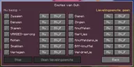 | Emotes | MechanicSysteem | Your guh can wave, dance, hug, yawn and much more.Je guh kan zwaaien, dansen, knuffelen, gapen en nog veel meer. |
 | EventsEvenementen | MechanicSysteem | Now and then something special happens in the Guhmension: a cheese rain, the Vads parade, a star shower or...Af en toe gebeurt er iets bijzonders in de Guhmensie: een kaasregen, de Vadsparade, een sterrenregen of het... |
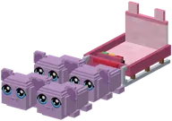 | The guh sled and sled railsDe guhslee en sleerails | MechanicSysteem | Build a sled track with sled rails and ride the guh sled with your guhs, with curves, drops, corkscrews and...Bouw een sleebaan met sleerails en rijd met je guhs in de guhslee, met bochten, drops, kurkentrekkers en... |
 | Story guhsVerhaalguhs | MechanicSysteem | Baltoguh, Guhtwo guh and 626 guh: every story ends with a new friend that you (per player) can tame once.Baltoguh, Guhtwo en 626-guh: elk verhaal eindigt met een nieuwe vriend die je (per speler) één keer mag... |
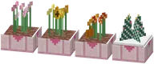 | Seasons and the day rhythmSeizoenen en het dagritme | MechanicSysteem | The Knuffeldal has four seasons and a day rhythm: the guhs do something different every hour.Het Knuffeldal kent vier seizoenen en een dagritme: de guhs doen elk uur iets anders. |
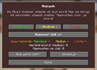 | Easy, medium or hardMakkelijk, medium of lastig | MechanicSysteem | In almost every minigame you choose how hard you want it: easy, medium or hard.Bij bijna elke minigame kies je hoe moeilijk je het wilt: makkelijk, medium of lastig. |
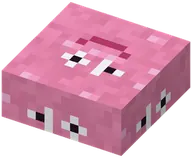 | The guh brewing kettleDe Guhbrouwketel | MechanicSysteem | Brew guh potions in the guh brewing kettle.Brouw guhdrankjes in de Guhbrouwketel. |
 | Vahoege vads | MechanicSysteem | The strongest metal of the Guhmension: tools and armour that never break.Het sterkste metaal van de Guhmensie: gereedschap en harnas die nooit kapotgaan. |
| CommandsCommando's | MechanicSysteem | Handy commands for creative mode and for operators.Handige commando's voor creative en voor operators. | |
| AdvancementsVooruitgangen | MechanicSysteem | All the advancements of Guhs, by tab.Alle vooruitgangen van Guhs, per tabblad. | |
 | The guh booksDe guhboeken | MechanicSysteem | The books of the guh library: read them on the lecterns.De boeken van de guhbibliotheek: lees ze op de lessenaars. |
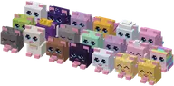 | Guh plushiesGuhknuffels | MechanicSysteem | Collect the plushies of all the guhs.Verzamel de knuffels van alle guhs. |
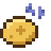 | EffectsEffecten | MechanicSysteem | The effects that Guhs adds.De effecten die Guhs toevoegt. |